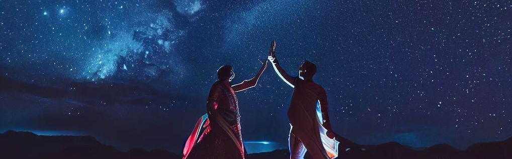

Postdoctoral Researcher
Steward Observatory and Department of Astronomy
University of Arizona, Tucson, United States
About Me
Education:
Bachelor and Master in Physics, Indian Institute of Technology Kharagpur.
Doctor of Philosophy in Astronomy and Astrophysics, University of Bonn.
Research Interests: Massive stellar and binary evolution, gravitational waves,
globular clusters, gamma ray bursts, core-collapse supernovae
Research

I work on various aspects of massive binary evolution, elucidated below.
Algol binary stars
The term "Algol" addresses its prototypical star Beta Persei, a bright multiple star system in
the Perseus constellation. It is one of the first stars recorded to
show a variation in its brightness, dating back to 1244--1163 B.C.
... For all Batman enthusiasts,
the word "Algol" is derived from the Arabic word "Ra's al-Ghul", or the head of the Demon. For a
more extensive historical background, see the Wikipedia page.
These systems have short orbital periods (a few days) and can, more often than not, be observable as
double-lined eclipsing binaries. Hence, they are ideal systems for studying stellar and binary properties
as precise measurements of their component masses, radii, and effective temperatures are possible.
Moreover, they constitute a long-lived phase of close binary evolution where we see the systems in a
unique configuration where the less massive star transfers mass to its more massive companion.
More than 50 massive Algol binaries have been observed across our Milky Way, Large Magellanic Cloud
and Small Magellanic Cloud combined.
The above properties of Algol binaries provide a unique test-bed to study our theories of massive
stellar and binary evolution, such as the physics of binary interaction directly. I study the
evolution of massive Algol binaries (Algols heavier the eight times the mass of the Sun)
using detailed binary evolution models computed using the software
MESA (Modules for
Experiments in Stellar Astrophysics). By directly comparing the predictions of the binary models
to the observed properties of the massive Algols, I derive constraints on binary and stellar
physics, such as mass transfer efficiency, internal mixing, stellar winds, etc.
Wolf-Rayet stars
Wolf-Rayet stars are the brighest and hottest stars observable in the sky. The spectra of these
stars show broad emission lines of hydrogen, helium, nitrogen, oxygen and/or carbon. They
give out strong radiation-driven winds, ...enriching the interstellar medium with various heavy
elements. While most Wolf-Rayet stars are expected to burning helium in their cores, there
is also a handful of them situated on the main sequence of the Hertzsprung-Russell diagram,
presumably thought to be burning hydrogen in their cores. These stars are thought to be the
direct progenitors of black holes and neutron stars! So, an understanding of the formation
and evolution of these systems directly refine our knowledge in the field of gravitational
wave astronomy, a blooming new field in recent times.
I have shown that the evolution of very massive binaries challenges the convention knowledge
of binary evolution, all related to the luminosity of these stars being close to their Eddington
luminosity. Observed counterparts have been identified confirming the existence of the novel
binary evolution channel where a more massive star can transfer mass to a less massive star at
the nuclear timescale (reverse Algols). Furthermore, the mass-donors can be observable as
Wolf-Rayet stars, with BAT99 #113 being the smoking gun. I am studying the observable properties
of this class of binaries to understand their impact on the formation of black holes and in turn,
the strongest sources of gravitational wave emission.
Gravitational wave progenitors
The discovery of gravitational waves has given humanity a new pair of glasses to observe the
Universe. With ~100 detections of gravitational waves by LIGO, and more detectors such as LISA,
Taiji and Einstein Telescope ... expected to come up
in the coming decades, we have exciting years ahead. However, accurate or precise gravitational
wave merger rate predictions are difficult. Most rapid binary population synthesis codes used
for predicting the properties of gravitational wave merger events use simple, single-star
models. Moreover, there are significant uncertainties in the merger rate predictions
due to the underlying tension in our understanding of their progenitor systems, which I discussed
above.
With the recent rise in computer processing power, calculating extensive grids of massive single
and binary stellar evolution models has become possible. I am working to create grids of
state-of-the-art single and binary evolution models at different metallicities to feed into the
rapid binary evolution code COMPAS to derive more precise gravitational-wave merger rates.
Furthermore, a better understanding of massive star evolution obtained from the above projects
and implemented into the detailed model grids will also increase our merger rate predictions'
accuracy. Last but not least, these models can be used to study many other physical systems,
such as the evolution of globular clusters, gamma-ray bursts and core-collapse supernovae.
Eye Movement Desensitization and Reprocessing (EMDR) Therapy:
Practice video
Guest lecture on binary evolution at Steward Observatory:
Slides |
Notes |
Movie
How to make a website: Having a professional website is a small but significant step towards making
your works more accessible to the academic world. Here is the
Astrosites tutorial that I used to make my own!
How to plan and write a research paper: Writing the first research paper can be daunting.
There are a lot of books addressing the task, but here are two short articles discussing how to plan and
write a paper in astronomy.
(Biased) list of papers on the theory of massive binary evolution: Following is the
path I took to start learning about massive binaries during my doctoral studies: Pols (1994) -> Wellstein et
al. (2001) -> Braun & Langer (1995) -> Nelson & Eggleton (2001) -> de Mink et al. (2007) -> Sen et al.
(2022). You can find them and more here.